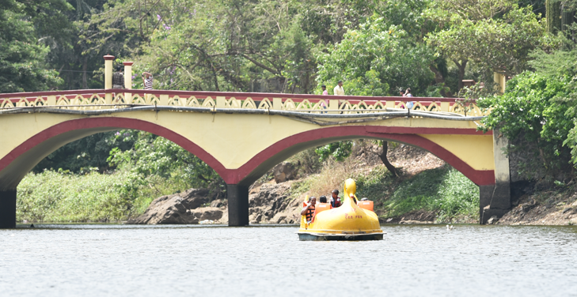
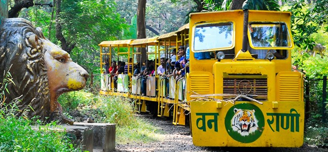
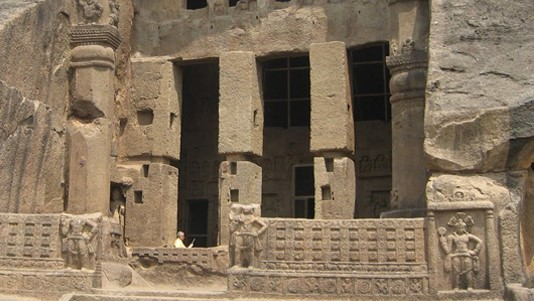
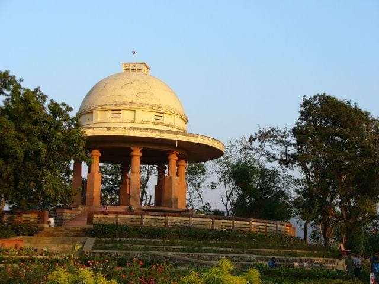

Sanjay Gandhi National Park
Quote: "Each and every animal on earth has as mush right to be here as you and me."
About us:
Sanjay Gandhi National Park (SGNP) has always been the ideal picnic or weekend break-away destination for Mumbaikars in search of some respite from the chaos and pressures of this densely populated metropolis. Be it a boat ride in the artificial lake near the main gate or joy ride in the hugely famous mini train or the ‘van rani’, visitors throng these attractions by the thousands on an ideal weekend. Some walk upto the Gandhi Tekdi and enjoy the sky scape around the immediate vicinity.
| History
The Sanjay Gandhi National Park area has a long written history dating back to the 4th century BC. In ancient India...read |
| Online Booking Book Now |
| Gallery
Click here to view photos Click here to view videos |
| Do's and Don'ts Click here to read instructions |
| Contact Details
Address: Borivali East, Mumbai, Maharashtra 400066 |
|
The expansive safari cages enable the visitors to watch these big cats from the safety of a closed vehicle and in a simulated wild landscape |

Just a stone throw away from the main gate is the idyllic artificial water body which allows one to use the pedal boats and go peddling on the scenic, refreshing lake created to facilitate just this experience. |

This toy train facility is one of the oldest attraction in SGNP. Go chugging along the circuitous narrow gauge, route covering the permimeter of the Gandhi Tekdi hillock. |
| 
A 2,000-year-old complex sits within the park, housing more than 100 (is this correct) caves cut out of rock forming a protected archaeological site. One can drive, walk, take a bus ride or even cycle up to here. |
The butterfly garden has a staggering diversity of butterflies and is most vibrant in the months from September to January. A pocket guide to the butterflies of Sanjay Gandhi National Park is also available |

The Gandhi Tekdi is a memorial dedicated to the ‘father of the nation’. Enjoy, beautiful views of the surrounding forest and the city at the same time! |